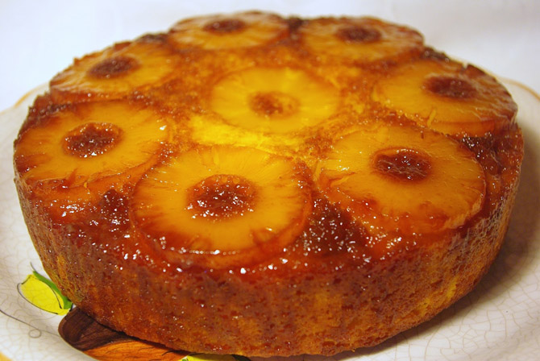

Bolo De Ananas

Ingredientes
- 250g de farinha
- 250g de açúcar
- 6 ovos
- 1 lata de abacaxi em calda (ananás)
- 250g de açúcar para caramelizar
- Cerejas para decorar
Modo de Preparo
- Antes de começar a fazer o bolo ananás, pré-aqueça o forno a 180ºC.
- Bata as gemas com o açúcar até ficarem brancas.
- Junte 6 colheres de calda e bata bem.
- Depois despeje tudo em uma tigela e junte a farinha com o fermento mexendo sempre.
- Bata as claras em ponto de pico e junte à massa, envolvendo-as levemente.
Unte a forma com o açúcar queimado e forre com rodelas finas de abacaxi (ananás)
- Coloque sobre a massa e leve ao forno médio por cerca de 45 minutos.
- Se desejar, decore com cerejas.